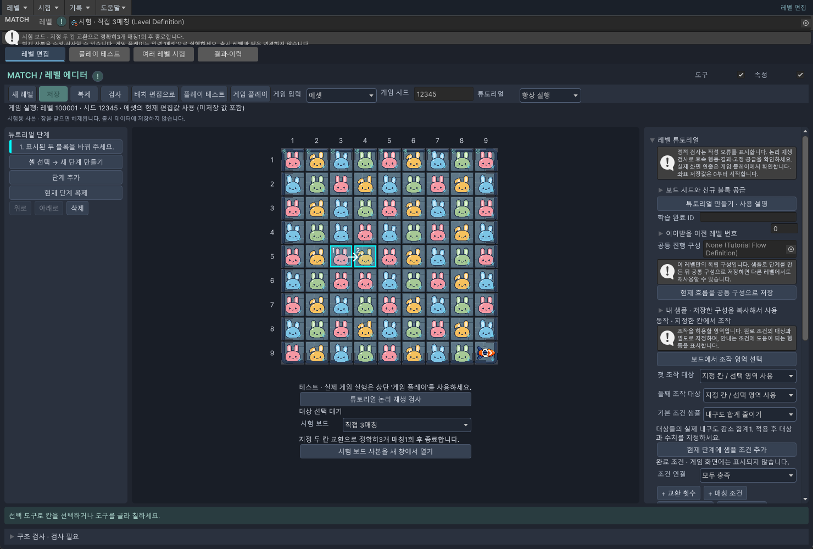

달 토끼 고물상 · 레벨 에디터
튜토리얼 만들기
최종 설명 갱신: 2026-10-08 · Windows / Unity 6000.3.10f1
제작 메뉴·셀 연결·공유 적용·복사·Undo/Redo·샘플 저장/재로드는 에디터 자동 검사로 확인했습니다. 실제 화면 캡처와 기기 입력 검증 상태는 완료 보고서를 따릅니다.
시작은 여기서 · 먼저 연습 창을 열어요
튜토리얼은 플레이어에게 보여 줄 짧은 안내를 순서대로 붙이는 것입니다. 처음에는 준비된 연습 보드로 방법을 익히고, 익숙해지면 자기 레벨의 칸과 숫자로 바꿉니다.
- Unity 위쪽 메뉴 Match → 레벨 에디터를 엽니다. 통합 작업창이라면 레벨 편집 탭을 누릅니다.
- 상단 레벨 칸에서 작업할 레벨 에셋을 선택합니다. Project 창의 LevelDefinition 에셋을 끌어다 놓거나 선택 버튼으로 찾습니다.
- 보드 위 도구줄의 튜토리얼 편집을 누릅니다. 왼쪽이 튜토리얼 단계 목록으로 바뀌고, 같은 보드가 가운데에 남습니다.
- 보드 아래 시험 보드에서 직접 3매칭을 고릅니다. 그 아래 시험 보드 사본을 새 창에서 열기를 누릅니다.
- 새 창 상단에 시험 · 직접 3매칭이 보이면 준비 끝입니다. 이 창에서 연습해도 원래 레벨의 배치는 바뀌지 않습니다.
이제 ① 일반 블록 3매칭부터 따라 해 보세요. 준비된 단계를 살펴보는 방법과, 지우고 직접 새로 만드는 방법을 모두 설명합니다.
2026-10-08 변경 · 이전 시작 안내 보기
이전 설명입니다. 현재는 위의 3매칭 따라하기 순서로 시작하세요.
처음 시작할 때
Match → 레벨 에디터에서 작업할 레벨을 선택하고 튜토리얼 편집 모드로 전환합니다. 별도 보드를 새로 만드는 것이 아니라 현재 레벨의 배치와 생성구를 그대로 사용합니다. 실제 레벨을 수정하기 전에는 ‘샘플 시험 보드’로 연습하세요.
- 샘플 시험 보드에서 ‘지정한 두 칸 교환’을 고르고 ‘시험 보드 사본을 새 창에서 열기’를 누릅니다.
- 중앙 보드, 단계 목록, 동작·조건·안내 설정을 확인합니다. 시험 보드는 출시 레벨에 저장되지 않습니다.
- ‘보드에서 교환 두 칸 선택’을 누르고 이웃한 두 칸을 차례로 선택합니다. 선택 도중 Esc는 취소입니다.
- 조건은 ‘교환 성공’ 1회로 시작하세요. 교환 횟수와 매칭 묶음 수는 서로 다릅니다.
- 안내 문구를 입력하고 ‘대상과 조작 셀 자동 강조’를 사용합니다. 게임은 투명한 조작 영역과 주변의 어두운 가림막으로 안내합니다.
- ‘튜토리얼 논리 재생 검사’를 누릅니다. 통과하면 실제 게임 플레이로 손가락 안내와 입력, 낙하 후 다음 단계 전환을 확인합니다.
검사 통과는 화면 연출까지 확인했다는 뜻은 아닙니다. 후속 행동에 필요한 블록은 초기 배치와 고정 공급에서 준비해야 합니다.
현재: 교환 성공만 확인하는 짧은 설명에서, 직접 3매칭을 새로 만드는 실습과 사진 안내로 확장했습니다.
만들고 싶은 안내를 고르세요
화면 네 곳만 기억하세요

| 위치 | 여기서 하는 일 | 예 |
|---|---|---|
| 왼쪽 · 단계 목록 | 어느 안내를 고칠지 선택 | 1단계는 만들기, 2단계는 사용하기 |
| 가운데 · 보드 | 조작할 칸이나 조건 대상을 클릭 | 분홍 블록 → 오른쪽 노란 블록 |
| 오른쪽 · 설정 | 동작·완료 조건·안내 문구 입력 | 3개 매칭 1회 / 상자 내구도 1 감소 |
| 보드 아래 · 테스트 | 논리 검사, 시험 보드 선택 | 끝까지 진행 가능한지 검사 |
오른쪽은 길어서 아래로 스크롤해야 안내 문구와 칸 선택 버튼이 보일 수 있습니다. 상단 배치 편집으로를 누르면 평소의 블록·장애물 배치 화면으로 돌아갑니다.
사진과 이 매뉴얼의 5행 3열은 왼쪽 숫자 5와 위쪽 숫자 3이 만나는 칸입니다. 고급 설정의 원시 좌표는 0부터 저장되므로 숫자를 직접 계산하기보다 보드에서 선택 버튼을 쓰세요.
추가 · 연습 없이 내 레벨에서 바로 시작하려면
- 상단 레벨에서 실제 작업 에셋을 선택합니다. 배치 편집에서 원하는 행동이 가능하도록 블록을 먼저 놓습니다. 3매칭이라면 한 번 바꿨을 때 같은 색 3개가 연결되어야 합니다.
- 튜토리얼 편집을 누릅니다. 셀 선택 → 새 단계 만들기로 시작하고 3매칭 예제의 두 칸 선택부터 따라 합니다. 예제의 행·열 대신 내 보드의 칸을 클릭합니다.
- 기존 단계가 있다면 왼쪽에서 고칠 단계를 선택합니다. 새 안내가 필요할 때만 단계를 추가하세요. 공통 진행 구성이 연결되어 있으면 이 레벨의 설정에서 바꾸고, 흐름 자체를 이 레벨만 다르게 하려면 먼저 독립 복사 · 공유 연결 해제를 사용합니다.
- 새 학습에는 오른쪽 학습 완료 ID에 구분되는 이름을 정합니다. 예:
basic.match3. 같은 학습을 공유할 때만 같은 ID를 사용합니다. 신규 작성이면 이어받을 이전 레벨 번호는 비워 둡니다. - 상단 저장 후 아래의 검사·게임 확인을 진행합니다. 두 번 이상 행동하게 한다면 첫 행동 뒤의 낙하와 고정 공급도 확인하세요.
검사 → 게임 확인 → 내 레벨에 저장
- 튜토리얼 논리 재생 검사를 누릅니다. 오류가 나오면 오른쪽 이 오류의 설정으로 이동으로 문제 항목을 찾습니다. “논리 재생 통과”는 결과 조건이 가능하다는 뜻이며, 화면까지 확인한 것은 아닙니다.
- 상단 게임 입력 = 에셋, 튜토리얼 = 항상 실행, 게임 플레이로 직접 확인합니다. 에셋 모드는 현재 편집 값도 사용하므로 시험 창의 수정 결과를 바로 볼 수 있습니다.
- 연습 결과를 다시 쓸 때는 오른쪽 내 샘플 · 저장한 구성을 복사해서 사용을 펼칩니다. 현재 단계를 내 샘플로 저장 또는 전체 흐름을 내 샘플로 저장을 누르고 새 이름으로 저장합니다.
- 원래 작업 레벨 창으로 돌아갑니다. 같은 메뉴를 펼쳐 적용할 샘플에 저장한 에셋을 선택합니다. 미리보기를 읽은 다음 미리 본 샘플을 끝에 추가를 누릅니다.
- 작업 레벨에 맞게 조작 칸·대상·횟수를 다시 지정합니다. 샘플은 안내만 복사하므로 초기 블록 배치·시드·신규 블록 공급도 따로 준비해야 합니다. 파워 생성과 사용처럼 서로 이어진 단계는 함께 옮깁니다.
- 실제 레벨의 상단 저장을 누르고 다시 검사·게임 확인을 합니다. 여러 레벨이 같은 흐름을 함께 쓸 때는 공통 구성으로 관리할 수도 있습니다.
| 선택 | 언제 사용하나요? |
|---|---|
| 에셋 | 지금 편집하는 내용을 빠르게 확인할 때 |
| MemoryPack | 변환해 둔 데이터를 확인할 때. 플레이 테스트 → MemoryPack 갱신 후 선택합니다. |
| 항상 실행 | 같은 튜토리얼을 여러 번 고쳐 가며 시험할 때 |
| 자동 | 학습 완료 기록에 따라 필요한 경우에만 진행되는지 확인할 때 |
| 실행 안 함 | 안내 없이 일반 퍼즐만 시험할 때 |
세 가지 설정을 구분하세요
| 항목 | 하는 일 | 예 |
|---|---|---|
| 허용 동작 | 플레이어가 할 수 있는 조작 | 선택한 두 칸 교환 |
| 완료 조건 | 다음 단계로 넘어갈 기준 | 교환 성공 2회, 내구도 총 2 감소 |
| 강조 영역 | 어디를 보여줄지 | 조작할 칸과 대상 장애물 |
한 단계 안에서는 ‘모두 충족’ 또는 ‘하나 이상 충족’을 선택합니다. 행동의 순서를 강제하려면 단계를 나누세요. 게임 화면에는 조건 숫자나 체크리스트가 표시되지 않습니다.
조건 선택 안내
| 조건 | 입력과 의미 |
|---|---|
| 교환 성공 | 성공 횟수. 실패 후 원위치 복귀는 세지 않음 |
| 매칭 | 색상·블록 수·정확히/이상·직접/연쇄·횟수 |
| 내구도 감소 | 실제로 줄어든 양. 전체 합계 또는 각 대상마다 |
| 남은 내구도 | 정확히 지정한 값. 3→1은 ‘남은 2’ 조건을 충족하지 않음 |
| 제거 | 선택한 공격 원인으로 제거된 개체 수. 2×2 장애물 하나는 1개 |
| 파워 생성 | 로켓·폭탄·드론·자석의 종류·방향·생성 개수 |
| 단독 발동 | 직접 사용만. 자동 연쇄 발동과 두 파워 조합은 별도 |
| 조합 발동 | 선택한 두 파워 조합의 성공 횟수 |
| 아이템 사용 | 실제 성공 횟수. 무료 체험 횟수 안에서 수행해야 함 |
| 미션 진행 | 현재 레벨의 해당 미션이 새로 진행된 양 |
어떤 것을 대상으로 하나요?
- 보드 전체: 자동 강조에서는 조작할 칸만 엽니다.
- 특정 개체: 보드에서 물건을 선택합니다. 낙하해도 같은 물건을 추적합니다.
- 종류: 같은 정의 ID의 개체들을 대상으로 합니다.
- 영역: 지정한 칸에서 발생한 결과를 집계합니다. 여러 칸을 선택한 뒤 ‘선택 완료’를 누르세요.
- 생성 결과: 앞 단계의 생성 조건에 붙인 이름으로 새 블록을 추적합니다. 완료 ID와는 별개입니다.
두 번 교환하는 흐름에서는 첫 교환 후 새로 공급되는 블록도 필요할 수 있습니다. ‘보드 시드와 신규 블록 공급’에서 시드와 생성구별 고정 공급을 설정하세요. 단계가 넘어가도 소비된 공급 위치는 초기화되지 않습니다.
막혔을 때 확인할 것
| 증상 | 확인 순서 |
|---|---|
| 설정 값이 없다고 나옴 | 공통 구성에 항목이 추가되었는지 확인 → 설정 목록 동기화 → 이 레벨 값 입력 |
| 선택할 행동이 없음 | 조건에 기여하는 교환인지, 조작 영역이 충분한지, 고정 공급 후 배치가 맞는지 검사 |
| 대상 개체가 사라짐 | 앞 단계 연쇄로 제거되지 않았는지 확인. 다른 개체로 자동 대체하지 않음 |
| 공통 수정이 다른 레벨에 반영됨 | 공유 방식의 정상 동작. 특정 레벨만 다른 구성이 필요하면 먼저 독립 복사 |
| 무료 체험을 끝내도 조건 미충족 | 무료 횟수와 성공 조건, 감소 가능한 내구도를 확인 |
이동 횟수 0에서도 남은 무료 아이템 체험·설명은 마무리합니다. 일반 교환 횟수를 더 주지는 않습니다. 추가 교환이 필요하면 미완료 상태로 정상 승패 처리에 복귀합니다.
변경 이력
2026-10-08 · 시작 안내 · 짧은 교환 설명 → 실제 화면과 세 가지 따라하기. 초보자의 생성·선택·수정·저장 절차를 추가했습니다.
추가 확인: 임시 3매칭·로켓 생성/사용·내구도 감소·인접 매칭 예제 논리 재생, 실제 편집기 캡처. 실기기 터치는 이번 문서 작업에서 검증하지 않았습니다.
2026-10-08 · 추가 · 튜토리얼 제작 순서와 조건·대상·오류 안내. 사용자 요청에 따라 초보자용 설명을 포함했습니다.
문서 표시 확인 · 2026-10-08 · Chrome 1440px / 390px · 내부 링크·이미지 정상. 폴더 복사 후 오프라인 파일 열기와 목차 왕복 확인.